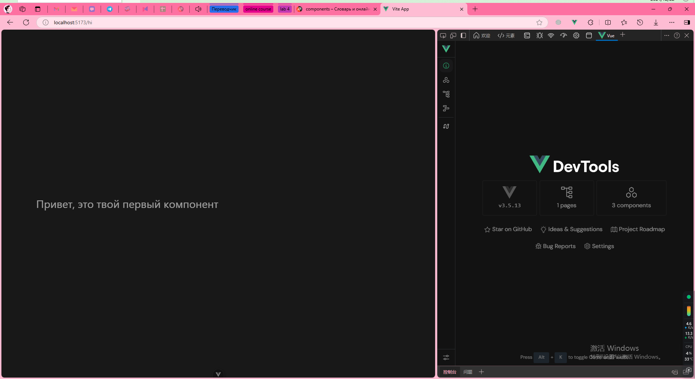
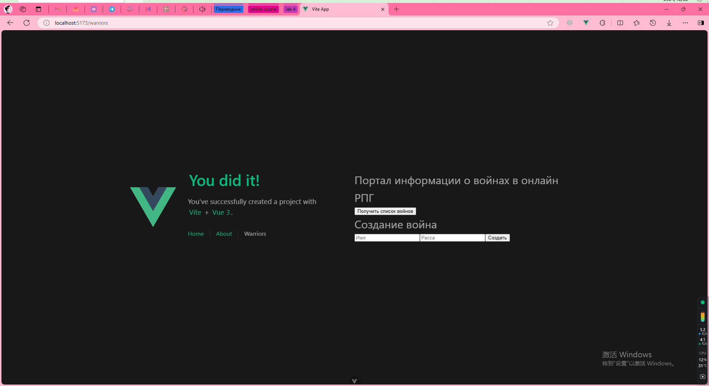

Лаб №4 - Реализация клиентской части средствами Vue.js
Вариант 2 - Доска домашних заданий
Группа:D3310 Студент: Ван Цзынин
Реализовать документацию, описывающую работу разработанных интерфейсов
Введение
В данной работе разрабатывается документация для веб-приложения с использованием фреймворка Vue.js и Django REST framework. Целью является создание интерфейсов, которые взаимодействуют с бэкендом через API, обеспечивая правильное взаимодействие между фронтенд и сервером.
В ходе работы будут рассмотрены основные операции, такие как получение данных с сервера, отправка данных и обработка ошибок, а также настройка CORS для корректной работы кросс-доменных запросов.
Описание работы интерфейсов
1. Основной интерфейс пользователя
Интерфейс пользователя позволяет получить список всех доступных воинов с сервера, добавлять нового воина и обновлять информацию о существующих. Все данные хранятся на сервере, и для взаимодействия с ними используются HTTP-запросы, такие как GET, POST, PUT и DELETE.
2. Описание API
Веб-приложение использует RESTful API, обеспечивающее доступ к данным о воинах. Основные эндпоинты API:
- GET /warriors/list – получает список всех воинов.
- POST /warrior/create – создает нового воина.
- PUT /warrior/update/{id} – обновляет данные о воине.
- DELETE /warrior/delete/{id} – удаляет воина.
3. Реализация интерфейсов во Vue.js
Для работы с API используется библиотека Axios, которая позволяет выполнять HTTP-запросы с клиентской стороны. Все операции с API описаны ниже.
import axios from 'axios';
export default {
data() {
return {
warriors: [],
};
},
mounted() {
this.fetchWarriors();
},
methods: {
async fetchWarriors() {
try {
const response = await axios.get('http://example.com/api/warriors/list');
this.warriors = response.data;
} catch (error) {
console.error("Ошибка при получении данных о воинах:", error);
}
},
async addWarrior(warriorData) {
try {
const response = await axios.post('http://example.com/api/warrior/create', warriorData);
this.warriors.push(response.data);
} catch (error) {
console.error("Ошибка при добавлении воина:", error);
}
}
}
};
APP.vue
<script setup>
import { RouterLink, RouterView } from 'vue-router'
import HelloWorld from './components/HelloWorld.vue'
</script>
<template>
<header>
<img alt="Vue logo" class="logo" src="@/assets/logo.svg" width="125" height="125" />
<div class="wrapper">
<HelloWorld msg="You did it!" />
<nav>
<RouterLink to="/">Home</RouterLink>
<RouterLink to="/about">About</RouterLink>
<RouterLink to="/warriors">Warriors</RouterLink> <!-- 添加导航到 Warriors 页 -->
</nav>
</div>
</header>
<RouterView />
</template>
<style scoped>
header {
line-height: 1.5;
max-height: 100vh;
}
.logo {
display: block;
margin: 0 auto 2rem;
}
nav {
width: 100%;
font-size: 12px;
text-align: center;
margin-top: 2rem;
}
nav a.router-link-exact-active {
color: var(--color-text);
}
nav a.router-link-exact-active:hover {
background-color: transparent;
}
nav a {
display: inline-block;
padding: 0 1rem;
border-left: 1px solid var(--color-border);
}
nav a:first-of-type {
border: 0;
}
@media (min-width: 1024px) {
header {
display: flex;
place-items: center;
padding-right: calc(var(--section-gap) / 2);
}
.logo {
margin: 0 2rem 0 0;
}
header .wrapper {
display: flex;
place-items: flex-start;
flex-wrap: wrap;
}
nav {
text-align: left;
margin-left: -1rem;
font-size: 1rem;
padding: 1rem 0;
margin-top: 1rem;
}
}
</style>
Скриншоты интерфейсов
Интерфейс VUE

Интерфейс warriors

Выводы
В ходе выполнения лабораторной работы №4 были разработаны и протестированы интерфейсы для взаимодействия фронтенда, реализованного на Vue.js, с бэкендом на Django REST framework.
Основные результаты работы:
1) озданы RESTful API для работы с данными о воинах, обеспечивающие операции получения, создания, обновления и удаления данных.
2) Настроена политика CORS для обеспечения безопасного и корректного взаимодействия между клиентской и серверной частями.
3) Реализован интерфейс пользователя, позволяющий управлять данными через HTTP-запросы с использованием библиотеки Axios.
4) Создана документация, описывающая работу интерфейсов, с использованием инструмента MkDocs.
5) Полученные знания и реализованные технологии могут быть применены для разработки более сложных и масштабируемых веб-приложений.